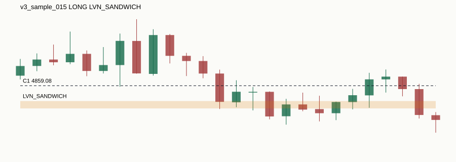

Research-only candidate windows. Not signals, not validation, not live trading.

| sample_id | v3_sample_015 |
|---|---|
| symbol | XAUUSD |
| anchor_timestamp | 2026-04-17T22:50:00+00:00 |
| direction | LONG |
| c1_source | H1_SWING |
| c1_timeframe | H1 |
| c1_priority | MEDIUM |
| c1_level_type | SWING_LOW |
| c1_level_price | 4859.08 |
| c1_swing_time | 2026-02-17T07:00:00+00:00 |
| c1_known_at | 2026-02-17T10:00:00+00:00 |
| sweep_timestamp | 2026-04-17T21:50:00+00:00 |
| sweep_price | 4855.92 |
| reaction_zone_type | LVN_SANDWICH |
| reaction_zone_low | 4856.0 |
| reaction_zone_high | 4857.0 |
| reaction_zone_detected_at | 2026-04-17T22:45:00+00:00 |
| round_level | 4860.0 |
| round_distance_pips | 9.2 |
| liquidity_confluence_config | CONFIG_A_H4_INTERNAL_M1_EXTERNAL |
| liquidity_confluence_distance_pips | 9.3 |
| entry_level_price | 4856.5 |
| entry_level_source | LVN_SANDWICH |
| session | OTHER |
| chart_path | charts/v3_sample_015.svg |
| html_path | |
| reason_codes | C1_AGED_D1_OR_H1_SWING|C1_SWING_LOW_SWEPT|C5_LONG_FROM_LOW_SWEEP|C2_LVN_SANDWICH_24H_PROFILE|PROFILE_WINDOW_EXCLUDES_ANCHOR|C3_NUMBER_THEORY_CONFLUENCE|C4_CONFIG_A_H4_INTERNAL_LTF_EXTERNAL|C5_DIRECTION_INFERENCE_UNAMBIGUOUS_BEYOND_SWEEP |
| limitations |